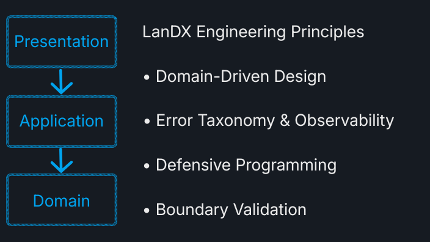

About Me
I am Zi-Cheng Huang (黃子誠), an operations-focused technical builder with more than 12 years of frontline retail operations experience.
Throughout my career, I have been driven by a simple habit: whenever I encounter repetitive work or an inefficient process, I naturally begin analyzing how it works and how it can be improved. That mindset eventually led me from operational optimization into software engineering, workflow automation, and AI-assisted productivity.
Under the alias LanDX, I independently design technical projects that explore defensive programming, software architecture, automation tooling, and reliable system design. These projects are not demonstrations of framework usage—they are opportunities to understand how systems behave beneath the abstraction layer.
Rather than collecting technologies, I focus on understanding design trade-offs, system boundaries, and the engineering decisions that make software predictable, maintainable, and resilient over time.

Current Technology Focus
- AI-Assisted Problem Solving & Prompt Engineering
- Workflow Automation with PowerShell
- Software Architecture & Domain-Driven Design
- Clean Architecture
- Java & C# Engineering
- Defensive Programming
- Boundary Validation
- Error Taxonomy & Observability
- Low-Level System Exploration
Personal Approach
I believe that reliable software is built by understanding boundaries before implementation, validating assumptions before execution, and designing systems that remain understandable long after they are written.
For me, software engineering is not simply about writing code. It is about reducing uncertainty, making systems easier to reason about, and continuously improving the workflows that people depend on every day.